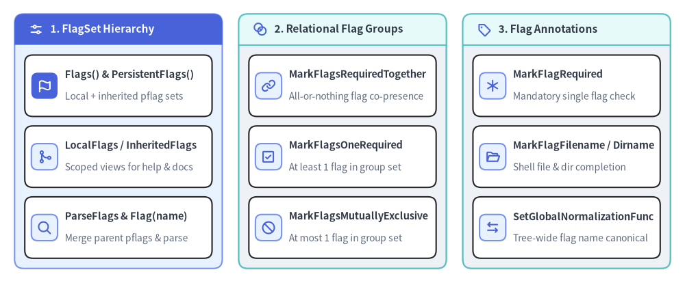
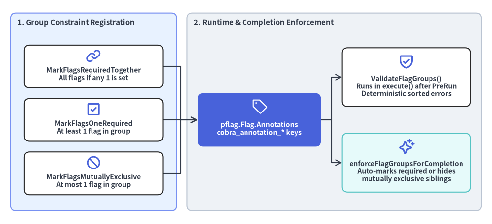

pflag.FlagSet Accessors, Annotations & Relational Flag Groups
Cobra integrates tightly with github.com/spf13/pflag (POSIX/GNU-style flags) to provide hierarchical flag inheritance (PersistentFlags vs. Flags), scoped flag set inspection (LocalFlags, InheritedFlags), single-flag and multi-flag relational constraints (MarkFlagRequired, MarkFlagsRequiredTogether, MarkFlagsOneRequired, MarkFlagsMutuallyExclusive), and file/directory completion annotations.

Source Code
from drawlib.canvas import save, setup
from drawlib.icons import phosphor
from drawlib.smartarts import CardList, Panel
from drawlib.styles import Colors, Styles
setup(width=188, height=78)
_ = Colors
col_specs = [
(
4.0,
"1. FlagSet Hierarchy",
Styles.PrimaryNeutral,
Styles.PrimaryFlat,
Styles.WhiteBold.patch(text_size=11.0),
phosphor.sliders_horizontal,
Styles.WhiteBold,
[
("Flags() & PersistentFlags()", "Local + inherited pflag sets", phosphor.flag, True),
("LocalFlags / InheritedFlags", "Scoped views for help & docs", phosphor.git_merge, False),
("ParseFlags & Flag(name)", "Merge parent pflags & parse", phosphor.magnifying_glass, False),
],
),
(
65.5,
"2. Relational Flag Groups",
Styles.Neutral,
Styles.SecondaryNeutral,
Styles.DarkBold.patch(text_size=11.0),
phosphor.intersect,
Styles.PrimaryBold,
[
("MarkFlagsRequiredTogether", "All-or-nothing flag co-presence", phosphor.link, False),
("MarkFlagsOneRequired", "At least 1 flag in group set", phosphor.check_square, False),
("MarkFlagsMutuallyExclusive", "At most 1 flag in group set", phosphor.prohibit, False),
],
),
(
127.0,
"3. Flag Annotations",
Styles.Neutral,
Styles.SecondaryNeutral,
Styles.DarkBold.patch(text_size=11.0),
phosphor.tag,
Styles.PrimaryBold,
[
("MarkFlagRequired", "Mandatory single flag check", phosphor.asterisk, False),
("MarkFlagFilename / Dirname", "Shell file & dir completion", phosphor.folder_open, False),
("SetGlobalNormalizationFunc", "Tree-wide flag name canonical", phosphor.arrows_left_right, False),
],
),
]
for x0, title, body_style, hdr_style, hdr_text_style, hdr_icon, hdr_icon_style, items in col_specs:
panel = Panel(
title,
"",
style=body_style,
header_style=hdr_style,
text_style=hdr_text_style,
icon=hdr_icon,
icon_style=hdr_icon_style,
header_variant="filled",
header_height=8.5,
)
panel.draw((x0, 4.0), width=57.0, height=70.0, align="bottom_left")
inner_xy, inner_w, inner_h = panel.get_content_box(
(x0, 4.0),
width=57.0,
height=70.0,
padding=(2.8, 2.8),
align="bottom_left",
)
cards = CardList(
style=Styles.White,
text_style=Styles.DarkBold.patch(text_size=10.5),
description_style=Styles.Muted.patch(text_size=10.0),
badge_shape="rounded_rect",
badge_style=Styles.PrimaryNeutral,
icon_style=Styles.PrimaryBold,
direction="vertical",
spacing=2.6,
)
for mod_name, mod_desc, mod_icon, is_focal in items:
if is_focal:
cards.add(
mod_name,
mod_desc,
icon=mod_icon,
badge_style=Styles.PrimaryFlat,
icon_style=Styles.WhiteBold,
)
else:
cards.add(mod_name, mod_desc, icon=mod_icon)
cards.draw(inner_xy, width=inner_w, height=inner_h, align="bottom_left")
save()
methodpflag.FlagSet Accessor & Parsing Methods#
Each *Command manages five internal *pflag.FlagSet pointers (flags, pflags, lflags, iflags, parentsPflags) and exposes accessor and parsing methods (command.go:L326-L330, L380-L390, L544-L558, L1216-L1258, L1499-L1538, L1681-L1890).
// Primary FlagSet Accessors
func (c *Command) Flags() *pflag.FlagSet
func (c *Command) PersistentFlags() *pflag.FlagSet
func (c *Command) LocalFlags() *pflag.FlagSet
func (c *Command) LocalNonPersistentFlags() *pflag.FlagSet
func (c *Command) InheritedFlags() *pflag.FlagSet
func (c *Command) NonInheritedFlags() *pflag.FlagSet
// Lookup, Parsing, Lifecycle & Normalization
func (c *Command) Flag(name string) (flag *pflag.Flag)
func (c *Command) ParseFlags(args []string) error
func (c *Command) ResetFlags()
func (c *Command) InitDefaultHelpFlag()
func (c *Command) InitDefaultVersionFlag()
func (c *Command) DebugFlags()
func (c *Command) SetFlagErrorFunc(f func(*Command, error) error)
func (c *Command) FlagErrorFunc() (f func(*Command, error) error)
func (c *Command) SetGlobalNormalizationFunc(n func(f *pflag.FlagSet, name string) pflag.NormalizedName)
func (c *Command) GlobalNormalizationFunc() func(f *pflag.FlagSet, name string) pflag.NormalizedName
| Method | Returned / Mutated Set | Description |
|---|---|---|
Flags() |
c.flags (*pflag.FlagSet) |
Returns the primary FlagSet for c. Before mergePersistentFlags(), contains flags declared directly on c. After mergePersistentFlags() (called during ParseFlags, LocalFlags, Usage, or MarkFlags*), contains c's local flags plus c.PersistentFlags() plus all ancestor PersistentFlags() (and pflag.CommandLine on Root()). |
PersistentFlags() |
c.pflags (*pflag.FlagSet) |
Returns the persistent FlagSet declared on c, which applies to c and is inherited by all descendant subcommands beneath c. |
LocalFlags() |
c.lflags (*pflag.FlagSet) |
Calls c.mergePersistentFlags() and returns all flags declared directly on c (both c.Flags() and c.PersistentFlags()), excluding ancestor persistent flags unless shadowed locally. Rendered under Flags: in default usage templates. |
LocalNonPersistentFlags() |
New *pflag.FlagSet |
Returns a fresh FlagSet containing only flags in c.LocalFlags() that are not present in c.PersistentFlags(). |
InheritedFlags() |
c.iflags (*pflag.FlagSet) |
Calls c.mergePersistentFlags() and returns all PersistentFlags inherited from ancestor commands (c.parentsPflags) that are not shadowed in c.LocalFlags(). Rendered under Global Flags: in default usage templates. |
NonInheritedFlags() |
c.LocalFlags() |
Alias for c.LocalFlags(). Used by cobra/doc generators (md_docs.go, man_docs.go, rest_docs.go). |
Flag(name string) |
*pflag.Flag |
Looks up name in c.Flags().Lookup(name); if not found, climbs c.PersistentFlags() and c.parentsPflags via c.persistentFlag(name). Returns nil if undefined. |
ParseFlags(args []string) |
error |
No-op (nil) if c.DisableFlagParsing is true. Otherwise calls c.mergePersistentFlags(), copies c.FParseErrWhitelist to c.Flags().ParseErrorsAllowlist, and runs c.Flags().Parse(args). |
ResetFlags() |
void |
Resets c.flagErrorBuf, reinitializes c.flags and c.pflags to empty FlagSets, and clears c.lflags, c.iflags, and c.parentsPflags to nil. |
InitDefaultHelpFlag() |
void |
Merges persistent flags and registers -h, --help (bool) with FlagSetByCobraAnnotation if "help" is not already defined on c.Flags(). |
InitDefaultVersionFlag() |
void |
No-op if c.Version == "". Otherwise registers --version (with -v shorthand if -v is free) with FlagSetByCobraAnnotation. |
DebugFlags() |
void |
Prints a diagnostic tree of all local ([L]), persistent ([P]), and local-persistent ([LP]) flags across c and its descendants using c.Println(). |
SetFlagErrorFunc / FlagErrorFunc |
func(*Command, error) error |
Sets or retrieves the error transformer invoked when c.ParseFlags(a) fails in execute(). Inherits from c.Parent() if unset on c. |
SetGlobalNormalizationFunc / GlobalNormalizationFunc |
func(*pflag.FlagSet, string) pflag.NormalizedName |
Applies a flag name normalization function (e.g., converting _ to -) to c.Flags(), c.PersistentFlags(), and recursively to all existing and future child commands. |
methodFlagSet Availability Predicates#
Eight boolean inspection methods on *Command (command.go:L1800-L1841) distinguish between any defined flags (Has*Flags) and visible flags (HasAvailable*Flags, excluding Hidden and Deprecated flags):
func (c *Command) HasFlags() bool
func (c *Command) HasPersistentFlags() bool
func (c *Command) HasLocalFlags() bool
func (c *Command) HasInheritedFlags() bool
func (c *Command) HasAvailableFlags() bool
func (c *Command) HasAvailablePersistentFlags() bool
func (c *Command) HasAvailableLocalFlags() bool
func (c *Command) HasAvailableInheritedFlags() bool
| Predicate Pair | Underlying FlagSet |
Difference (Has* vs HasAvailable*) |
|---|---|---|
HasFlags() / HasAvailableFlags() |
c.Flags() |
HasFlags() returns true if any flag exists; HasAvailableFlags() ignores hidden/deprecated flags (used by UseLine() to decide whether to append [flags]). |
HasPersistentFlags() / HasAvailablePersistentFlags() |
c.PersistentFlags() |
Checks flags declared in c.PersistentFlags(). |
HasLocalFlags() / HasAvailableLocalFlags() |
c.LocalFlags() |
HasAvailableLocalFlags() controls whether the Flags: section is rendered in defaultUsageTemplate. |
HasInheritedFlags() / HasAvailableInheritedFlags() |
c.InheritedFlags() |
HasAvailableInheritedFlags() controls whether the Global Flags: section is rendered in defaultUsageTemplate. |

Source Code
from drawlib.canvas import save, setup
from drawlib.diagrams.architecture import ArchitectureDiagram, Node, NodeGroup, PhosphorIcon
from drawlib.styles import Colors, Styles
setup(width=184, height=84)
_ = Colors
d = ArchitectureDiagram(
node_style=Styles.PrimaryBold,
node_text_style=Styles.DarkBold.patch(text_size=10.0),
edge_style=Styles.DarkBold.patch(line_width=1.5),
edge_text_style=Styles.Dark.patch(text_size=9.8),
node_card_style=Styles.White,
)
decl_grp = d.add(
NodeGroup(
"1. Group Constraint Registration",
width=62,
height=74,
style=Styles.PrimaryNeutral.patch(shape_r=2.0),
text_style=Styles.DarkBold.patch(text_size=10.8, halign="left", valign="top"),
),
xy=(4.0, 5.0),
)
req_tog = decl_grp.add(
Node(
"MarkFlagsRequiredTogether\nAll flags if any 1 is set",
icon=PhosphorIcon.LINK,
icon_size=5.8,
width=52,
height=16,
card_style=Styles.White.patch(shape_r=2.0),
),
xy=(31.0, 54.0),
)
one_req = decl_grp.add(
Node(
"MarkFlagsOneRequired\nAt least 1 flag in group",
icon=PhosphorIcon.CHECK_SQUARE,
icon_size=5.8,
width=52,
height=16,
card_style=Styles.White.patch(shape_r=2.0),
),
xy=(31.0, 34.0),
)
mut_excl = decl_grp.add(
Node(
"MarkFlagsMutuallyExclusive\nAt most 1 flag in group",
icon=PhosphorIcon.PROHIBIT,
icon_size=5.8,
width=52,
height=16,
card_style=Styles.White.patch(shape_r=2.0),
),
xy=(31.0, 14.0),
)
exec_grp = d.add(
NodeGroup(
"2. Runtime & Completion Enforcement",
width=110,
height=74,
style=Styles.Neutral.patch(shape_r=2.0),
text_style=Styles.DarkBold.patch(text_size=10.8, halign="left", valign="top"),
),
xy=(70.0, 5.0),
)
annot_node = exec_grp.add(
Node(
"pflag.Flag.Annotations\ncobra_annotation_* keys",
icon=PhosphorIcon.TAG,
icon_size=6.2,
width=46,
height=20,
style=Styles.White,
text_style=Styles.WhiteBold.patch(text_size=10.2),
card_style=Styles.PrimaryFlat.patch(shape_r=2.0),
),
xy=(27.0, 34.0),
)
val_node = exec_grp.add(
Node(
"ValidateFlagGroups()\nRuns in execute() after PreRun\nDeterministic sorted errors",
icon=PhosphorIcon.SHIELD_CHECK,
icon_size=6.0,
width=48,
height=22,
card_style=Styles.White.patch(shape_r=2.0),
),
xy=(82.0, 50.0),
)
comp_node = exec_grp.add(
Node(
"enforceFlagGroupsForCompletion\nAuto-marks required or hides\nmutually exclusive siblings",
icon=PhosphorIcon.SPARKLE,
icon_size=6.0,
width=48,
height=22,
card_style=Styles.SecondaryNeutral.patch(shape_r=2.0),
),
xy=(82.0, 18.0),
)
d.connect(req_tog, annot_node)
d.connect(one_req, annot_node)
d.connect(mut_excl, annot_node)
d.connect(annot_node, val_node)
d.connect(annot_node, comp_node)
d.draw((0.0, 0.0))
save()
methodRelational Flag Group API (flag_groups.go)#
Introduced in Cobra v1.4+ and refined through v1.10.2, relational flag groups enforce multi-flag constraints during both command execution (ValidateFlagGroups()) and interactive shell completion (enforceFlagGroupsForCompletion()).
func (c *Command) MarkFlagsRequiredTogether(flagNames ...string)
func (c *Command) MarkFlagsOneRequired(flagNames ...string)
func (c *Command) MarkFlagsMutuallyExclusive(flagNames ...string)
func (c *Command) ValidateFlagGroups() error
func (c *Command) ValidateRequiredFlags() error
| Method | Annotation Key & Panic Behavior | Runtime Error Message (ValidateFlagGroups) & Completion Behavior |
|---|---|---|
MarkFlagsRequiredTogether(flagNames ...string) |
Calls c.mergePersistentFlags() and appends strings.Join(flagNames, " ") to "cobra_annotation_required_if_others_set" on each flag. Panics if any flag name does not exist in c.Flags(). |
Error: "if any flags in the group [%v] are set they must all be set; missing %v" (unset sorted alphabetically).Completion: Once any flag in the group is present on the command line, all remaining flags in the group are dynamically marked required. |
MarkFlagsOneRequired(flagNames ...string) |
Appends group string to "cobra_annotation_one_required". Panics if any flag name is not found in c.Flags(). |
Error: "at least one of the flags in the group [%v] is required" when 0 flags in the group are set.Completion: While no flag in the group is set, all flags in the group are dynamically marked required. |
MarkFlagsMutuallyExclusive(flagNames ...string) |
Appends group string to "cobra_annotation_mutually_exclusive". Panics if any flag name is not found in c.Flags(). |
Error: "if any flags in the group [%v] are set none of the others can be; %v were all set" (set sorted alphabetically) when >= 2 flags are set.Completion: Once one flag in the group is set, all other flags in the group have flag.Hidden = true set so shells stop suggesting them (while keeping the set flag visible if it is a repeatable slice/array flag). |
ValidateFlagGroups() |
Reads all three group annotations on c.Flags() |
Returns nil if c.DisableFlagParsing is true. Evaluates validateRequiredFlagGroups, validateOneRequiredFlagGroups, and validateExclusiveFlagGroups in order, returning the first error. Only evaluates a group if hasAllFlags(c.Flags(), flagnames...) is true (allowing persistent flag groups declared on parents to work cleanly). |
ValidateRequiredFlags() |
Checks BashCompOneRequiredFlag ("true") on c.Flags() |
Returns nil if c.DisableFlagParsing is true. Returns required flag(s) "foo", "bar" not set if any required flag has !pflag.Changed. |
Example: Combining MarkFlagsOneRequired, MarkFlagsMutuallyExclusive, and MarkFlagsRequiredTogether#
// Authentication: either (--username AND --password) OR --token, but never both
loginCmd.Flags().String("username", "", "Account username")
loginCmd.Flags().String("password", "", "Account password")
loginCmd.Flags().String("token", "", "Bearer API token")
loginCmd.MarkFlagsRequiredTogether("username", "password")
loginCmd.MarkFlagsOneRequired("username", "token")
loginCmd.MarkFlagsMutuallyExclusive("username", "token")
funcSingle-Flag Requirement & Shell Completion Annotations (shell_completions.go)#
Cobra provides both *Command methods (which operate on c.Flags() or c.PersistentFlags()) and package-level functions (which operate on an arbitrary *pflag.FlagSet) to attach completion and requirement annotations to individual flags (shell_completions.go:L21-L98).
// Required Flag Annotations
func (c *Command) MarkFlagRequired(name string) error
func (c *Command) MarkPersistentFlagRequired(name string) error
func MarkFlagRequired(flags *pflag.FlagSet, name string) error
// File Extension Filtering Annotations (ShellCompDirectiveFilterFileExt)
func (c *Command) MarkFlagFilename(name string, extensions ...string) error
func (c *Command) MarkPersistentFlagFilename(name string, extensions ...string) error
func MarkFlagFilename(flags *pflag.FlagSet, name string, extensions ...string) error
// Directory-Only Filtering Annotations (ShellCompDirectiveFilterDirs)
func (c *Command) MarkFlagDirname(name string) error
func (c *Command) MarkPersistentFlagDirname(name string) error
func MarkFlagDirname(flags *pflag.FlagSet, name string) error
// Legacy Bash Custom Function Annotations
func (c *Command) MarkFlagCustom(name string, f string) error
func MarkFlagCustom(flags *pflag.FlagSet, name string, f string) error
| Method / Function | Underlying pflag.Flag.Annotations Key |
Value Stored & Runtime / Shell Effect |
|---|---|---|
c.MarkFlagRequired(name)cobra.MarkFlagRequired(flags, name) |
BashCompOneRequiredFlag |
Stores []string{"true"} on c.Flags() (or flags). Prioritizes --<name> in shell completions and causes ValidateRequiredFlags() to fail if the flag is not passed. Returns an error if name does not exist. |
c.MarkPersistentFlagRequired(name) |
BashCompOneRequiredFlag |
Stores []string{"true"} on c.PersistentFlags() so name is required on c and all subcommands. |
c.MarkFlagFilename(name, exts...)c.MarkPersistentFlagFilename(name, exts...)cobra.MarkFlagFilename(flags, name, exts...) |
BashCompFilenameExt |
Stores extensions (e.g., "yaml", "yml", "json"). Instructs __complete and shell scripts to restrict file completion to matching extensions (ShellCompDirectiveFilterFileExt). Pass no extensions to allow any filename. |
c.MarkFlagDirname(name)c.MarkPersistentFlagDirname(name)cobra.MarkFlagDirname(flags, name) |
BashCompSubdirsInDir |
Stores []string{}. Instructs __complete and shell scripts to complete only directory names (ShellCompDirectiveFilterDirs). |
c.MarkFlagCustom(name, f)cobra.MarkFlagCustom(flags, name, f) |
BashCompCustom |
Stores []string{f}. Legacy Bash V1 completion hook; prefer c.RegisterFlagCompletionFunc(name, fn) (see 05. Completions & Directives) for Bash V2, Zsh, Fish, and PowerShell support. |